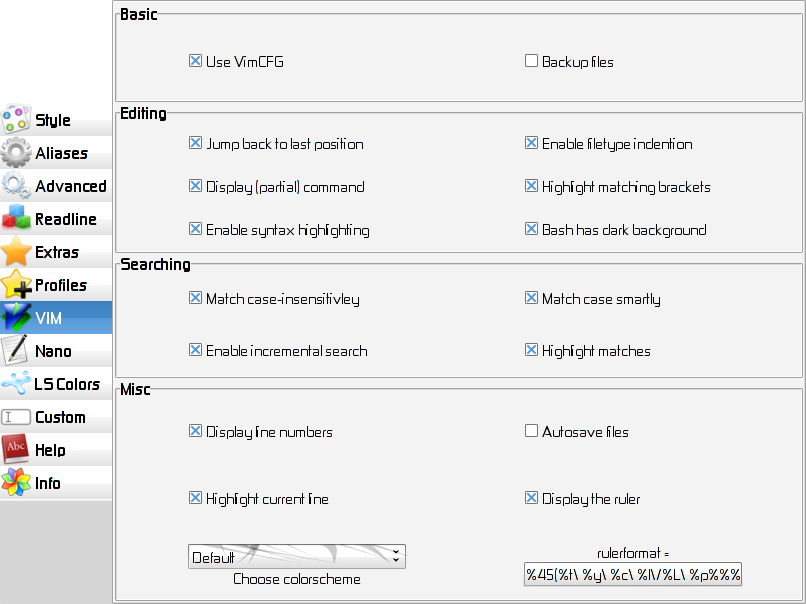

Chapter 9: Vi IMproved

9.1 Use VimCFG
Let BS-NG take care of VIms configuration.
9.2 Backup files:
Create backup files (<filename>~) when saving.
9.3 Jump back to last position
When exiting a file, remember the cursor position
and go there when the same file is opened again.
9.4 Enable Filetype Indention
Load indention rules according to the detected filetype.
9.5 Display (partial) command
Display (parts) of VIm Commands which you currently
are typing in the command line.
9.6 Hilight matching brackets
Hilight brackets when they are closed. eg.: VIm will
hilight the ( if the ) has been typed in.
9.7 Enable syntax hilighting
Hilight special words or syntaxes in different colors,
rule depends on the detected filetype.
9.8 Bash has dark background
VIm will change the colors accordingly, for better readability.
9.9 Match caseinsensitively
Don't care about upper and lower case while searching.
9.10 Match case smartly
Do smart case matching while searching.
9.11 Enable incremental search
Do incremental searches.
9.12 Highlight matches
Highlight search results.
9.13 Display line numbers
Display line numbers at the left.
9.14 Autosave files
Autosave file before executing commands like :next or :exit.
9.15 Highlight current line
Highlight the current line by underlining it.
9.16 Display the ruler
Display a ruler a the bottom, which displays various informations.
9.17 Choose a colorscheme
Set to "default" for using the system-wide default.
(Note: not all themes work with Vim, some are for GVim.)
9.18 Rulerformat
Here you can change the content of the ruler.
BS-NGs default is: %45(%t\ %y\ %c\ %l\/%L\ %p%%%)
- %t - is the filename without path
- %y - is the filetype
- %c - is the number of current column
- %l - is the number of current line
- %L - is the total number of lines
- %p - is the percentage of current position compared to whole file
Where are much more - see VIM-Doc.